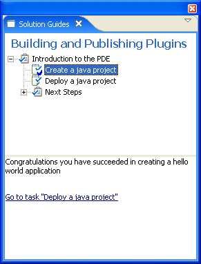

{kind=link}

Draft: 0.5
By Chris Goldthorpe and Dejan Glozic, IBM
This document describes in more detail the features described in the Eclipse Platform Project 3.2 Plan paragraph titled "Improve cheat sheet support". There are several motivations for enhancing cheat sheet support in Eclipse 3.2. Users need to be able to create and test cheat sheets quickly. Cheat sheets currently work best when the number of steps is small (less than 10) and the steps are always performed in the same order. There is a need to improve scalability and be able to handle much larger numbers of steps. Cheat sheets in Eclipse 3.1 can initiate actions but not commands which are replacing most uses of actions. Cheat sheets need to have a better way to recognize successful completion.
There are five areas in which cheat sheets will be enhanced:
Command and Linkability support will give cheat sheets the ability to initiate commands or follow links which will make it possible to author cheat sheets which initiate predefined commands without the need to write Java code.
Launching from a file or URL will be valuable for authors as well as regular users of cheat sheets. Authors will be able to develop cheat sheets without having to launch a runtime workbench to test that the xml is formed correctly. Cheat sheets which do not contain user-defined actions can now be opened directly from the file system or even from a Web server.
Cheat sheets do not scale well beyond about 10 steps. Instead of modifying cheat sheet themselves to handle more steps in a scalable manner, we will introduce a notion of tasks that can be completed independently.
Saving state in a file allows the state of cheat sheets to be shared between different members of a team.
Better recognition of success will be accomplished by extending the schema for cheat sheets to allow the author to define text which will be displayed after a step has been completed.
Eclipse is moving towards the use of Commands and Handlers rather than Actions. Cheat sheets in Eclipse 3.1 can initiate actions which are defined in the xml file for the cheat sheet using an action element as in the example below:
<item title="Open the Java Perspective">
<action pluginId="org.eclipse.ui.cheatsheets"
class="org.eclipse.ui.internal.cheatsheets.actions.OpenPerspective"
param1="org.eclipse.jdt.ui.JavaPerspective"/>
</item>
In Eclipse 3.2 a new element command will be added to the schema for cheat sheets
which can be a child of item, subitem or perform-when.
This will allow the cheat sheet to call a command and pass in parameters. An
item, subitem or perform-when may not have both a command and an action
associated with it. The example below shows an item which contains a command
with a parameter.
<item title="Open the Package Explorer">
<command id="org.eclipse.ui.views.showView"
param1="org.eclipse.jdt.ui.PackageExplorer"/>
</item>
Linkable references will also be introduced in Eclipse 3.2 and a linkable
element will be added to the schema for cheat sheets. A linkable reference
provides another alternative to commands and actions and a linkable can appear
in any of the same places that an <action> or command could occur. Linkables
do not have parameters. Here is an example of a linkable:
<item title="Open the Package Explorer"> <linkable url="url_of_a_linkable_object" /> </item>
Note: support for linkability is currently being integrated into the overall command framework. The linkable URL will essentially be another way of executing a command. For example, executing a command 'com.example.xyz.foo' with a parameter 'p1' and value 'v1' can be done in two ways:
<command id="com.example.xyz.foo" param1="v1"/>or<linkable url="command:com.example.xyz.foo?p1=v1"/>
Cheat sheets can be contributed using an extension point. In Eclipse 3.2 an additional method for launching cheat sheets will be introduced which allows the data for a cheat sheet to be read from a file or URL. This will make cheat sheet authoring easier as a new workbench does not need to be started to test a cheat sheet. It will also make it possible to launch a cheat sheet hosted on the file system or the internet. The cheat sheet selection dialog which is displayed when the user selects Help / Cheat sheets will be modified to add the option to launch a cheat sheet by reading the xml file from either a file in the workbench or from a URL.
Class OpenCheatSheetAction will be modified that it can allows
launching cheat sheets from a file. This is not an API change - the constructor
public OpenCheatSheetAction(String id, String name, URL url) already
exists but does not accept file: urls (see Bugzilla defect 88481).
Cheat sheets in Eclipse 3.1 are well suited to performing a sequence of 3-10 steps where the steps are always performed in the same order. As more steps are added it becomes harder to write a useful cheat sheet. Consideration was given to nesting cheat sheets or allowing items to contain other items but this would result in the text getting indented further to the right and would not give the ability to perform steps in different orders. Instead the proposal is to allow cheat sheets to be aggregated into a set of tasks. The platform will support informational tasks and cheat sheet tasks, while extensibility will allow for additional kinds of tasks to be contributed.
Note: the term 'task set' is used in this section to provide for describing the proposed new technology for improving cheat sheet scalability. It may not survive this proposal and a better term may be chosen. We welcome feedback on naming the collection of interdependent tasks by Eclipse Milestone 5 (mid February).
Cheat sheets with task sets will open in the cheat sheet view with a "task navigator" being displayed above a task detail section. The task navigator is by default a tree, while extensibility will permit different representations for the navigator. The task detail will display UI applicable to the selected task. For a cheat sheet task the cheat sheet would be displayed. If the view is wider than it is tall the sections are stacked horizontally instead of vertically. The screenshot below shows an example of a cheat sheet with a task set:
A task set is defined in the cheat sheet XML file and consists of a set of tasks.
Each task has a title and all tasks except informational tasks will have a task
kind and parameters. A task may have
an id and may also contain dependencies on previous tasks. The meaning of the parameters depends on the kind of the task, for a cheat sheet the id of the cheat sheet
is a required parameter. Tasks may also contain intro
elements which contain the text to be displayed before the task has been started
and onCompletion elements which contain the text to be displayed
once the task is completed. Both the intro and onCompletion elements may contain
form text markup, in this example the tags <b> and </b>, which are escaped in
the xml to <b> and </b> are used to make text bold.
Here is the xml file for the task set displayed above:
<?xml version="1.0" encoding="UTF-8"?>
<taskSet title="Building and Publishing Plugins">
<task title= "Introduction to the PDE">
<intro> This solution guide contains cheatsheets which can guide you through the <b>PDE</b>,
from creating a simple project to deploying a feature
</intro>
<task kind="cheatsheet" title= "Create a java project" id = "createJavaProject">
<param name="id" value = "org.eclipse.jdt.helloworld"/>
<intro>This task guide walks through the process of creating a simple hello world application.
The guide can launch wizards to create a new project and a new class.
</intro>
<onCompletion>Congratulations you have succeeded in creating a hello world application</onCompletion>
</task>
<task kind="cheatsheet" title= "Deploy a java project">
<intro>
In this task the hello world project created in a previous task will be deployed.
This task guide shows show to create <b>features</b> and <b>update sites</b>
</intro>
<dependsOn task = "createJavaProject" />
<param name = "id" value = "org.eclipse.pde.updates" />
</task>
<task title= "Next Steps">
<intro>
Once you have learned how to create and deploy a java project you may want to learn
about SWT and Rich Clients.
</intro>
<task kind="cheatsheet" title= "Create an SWT application">
<param name = "id" value = "org.eclipse.jdt.helloworld.swt" />
<intro>
Eclipse plugins which contribute to the user interface use The Standard Widget Toolkit (SWT).
This task guide can be used to learn more about SWT.
</intro>
</task>
<task kind="cheatsheet" title= "Create a Rich Client application">
<param name = "id" value ="org.eclipse.pde.rcpapp" />
< intro>
The minimal set of plug-ins needed to build a rich client application is
collectively known as the Rich Client Platform. This task guide walks through the steps
to create a rich client application.
</intro>
</task>
</task>
</task>
</taskSet>
In this task set "Deploy a Java Project" depends on "Create a Java
Project" and cannot be performed until "Create a Java Project" has been
completed. If the prerequisites for a task have not been completed then
that task cannot be started.
When the user selects a task from the task navigator that task will be opened in the lower pane. When a task is first selected just the introduction is displayed with a button to start of the task. Once the cheat sheet is started the other steps would show up as in the screenshot above. When the last step is completed a completion message will appear in the task detail section. completion. The icons for tasks which are in progress, completed or which cannot be started until a dependent task completes are decorated to show the state of the task. The decorations in these screenshots are placeholders, they will be replaced with professionally drawn images. The screenshot below shows how the task "Deploy a java project" cannot be started until "Create a java project" is completed. The completion message for a task will contain a hyperlink to advance to the next task as defined by the schema of the task set. After a task has been completed it will be possible to review that task in read only mode.
This sequence shows a task before it is started, while it is being run and after it has been completed.
 |
 |
 |
A task set will have one root task, a task may have any number of child tasks.
Each task can have a state of completed, not started or partially complete. The
representation of the task explorer is configurable with an extension point, for
Eclipse 3.2 a tree explorer will be included with the platform. By default the
explorer for a task set when first opened is a tree; an attribute on the
taskSet
element will allow that default to be overridden. If other explorers are
registered the user will have the option from the view menu to switch between
the different explorers.
Task sets are registered using the existing cheat sheet, registered task sets will show up with
standalone cheat sheets when the Help/Cheat sheets... menu is invoked. A task
set may alternatively be opened from a file.
A task set manages the state of its child cheat sheets. If a cheat sheet appears as a task in multiple task sets it can have a different state for each task set it appears in. There may be cases where one cheat sheet needs to access data from another cheat sheet. Rather than introduce a way in which cheat sheets can access that data directly, a mechanism will be introduced in task sets which allows the state of a cheat sheet to be seeded based on variables from another cheat sheet in the same task set.
In Eclipse 3.1 the state of a cheat sheet is persisted in project metadata. This will continue to be the default behavior in Eclipse 3.2 but the user will also be given the option to save and restore the state of a cheat sheet or a task set using a file in a user project.
If a cheat sheet is opened from a task set the a new instance of the cheat sheet state will be created and that state will be saved with the state of the task set.
A button to set the state location will be added to the toolbar of the Cheat sheet view. This
allows the user to specify a file where the state for the
task set/cheat sheet will be stored. A restore command will be added to the
drop-down menu for the cheat sheet view which allows the user to restore a cheat sheet
or task set from saved state. In the case of a task set the state
will be saved in multiple files, one for the task set itself and one for
each cheat sheet which is part of the task set.
In Eclipse 3.1 there is no mechanism for the cheat sheet author to add a message to cheat sheet which only shows up after the step has been completed successfully. When the last step is completed the cheat sheet returns to the the intro step. For Eclipse 3.2 a new element kind <onCompletion> will be added to the schema which can be optional child elements of items or subitems. <onCompletion> contains text that will be displayed if a step is completed successfully. A step is considered to be completed successfully if the user performs it manually or if the cheat sheet completes without error an Action, command or resolution of a linkable reference. If an onCompletion message is displayed it will have a single button next to it, with tooltip "go to next step" or "return to start" depending on whether the <onCompletion> is a child of the final item. For example:
<item title="Verify the code you created">
<description>Press the button to programmatically check the contents of the class you created</description>
<action
class="org.eclipse.ui.cheatsheets.examples.CheckJavaCode"
pluginId="org.eclipse.ui.cheatsheets.examples"/>
<onCompletion>Congratulations - you have now successfully built hello world using the PDE!</onCompletion>
</item>